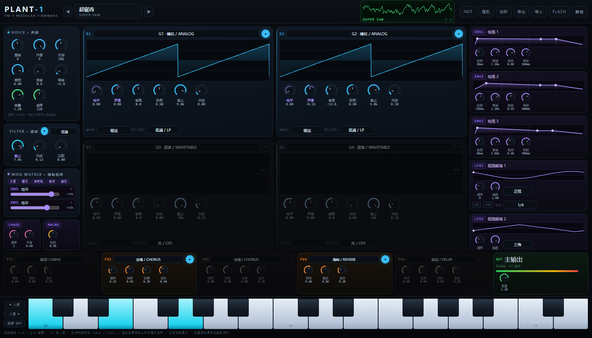

M-VAVE FM-1 · COMMUNITY FIRMWARE
PLANT-1
把 Phase Plant 那套「发生器 / 调制器 / 效果器」模块化思路，
做成 FM-1 的样子：27 键、TFT 小屏、袖珍机身。
不一样的是，这台固件跑在你的浏览器里——打开就能弹，不用刷机，也不会变砖。

GENERATORS
4 个发生器槽
模拟（锯齿/方波/脉冲/正弦）、波表、FM 算子、噪声，每个槽独立调音、声像、SVF 滤波。
MODULATION
拖线调制
3 包络、2 LFO、混沌、宏控，拖到任意旋钮上就接上；每个音有自己的一份，和弦不会串。
EFFECTS
5 槽效果链
驱动、降位、合唱、移相、延迟、混响、均衡、压缩、滤波、立体声宽度，随换随用。
HARDWARE
接上 FM-1 就弹
用 USB MIDI 把 FM-1 的 27 键、旋钮、按钮接进来当硬件控制器，页面会认出你的设备。
怎么用
- 第一次点击页面任意处才会开启音频（浏览器的自动播放策略）。
- Z–M / Q–U 两排键演奏，↑↓ 换八度，Shift 精调旋钮。
- 把 ENV1 / LFO1 / CHAOS / MACRO 的标签拖到旋钮上建立调制；Alt 拖旋钮调深度。
- 接上 FM-1：安装页 → 连接 FM-1，授权 MIDI 后它的键盘和旋钮就直接可用。